Support
Contact: [Geliştirici adı / e-posta]
For questions, bug reports and suggestions, write to the address above. How to use the app is explained in the guide below; the same guide is built into the app (Settings › Help).
The app is not official; following the hunting rules and legal responsibility rest with the hunter.
User guide
Av Haritası is a free iPhone app for hunters in Istanbul. It shows no-hunting and huntable areas, the MAK 2026-27 rules and hunting days and hours, and helps identify birds by sound, photo and video. The app works without internet. This guide is also built into the app (Settings › Help).
Basics2
This app is not official
Av Haritası is a helper tool; legal responsibility lies with the hunter. Boundaries may be off by a few hundred metres: if you are near a boundary and unsure, do not hunt. A green status does not replace your hunting licence, permit card, AVBİS permit or species limits.
This guide
Open this guide from Settings › Help; it works without internet and you can find topics with the search field at the top. You can also replay the welcome pages from the first launch here.

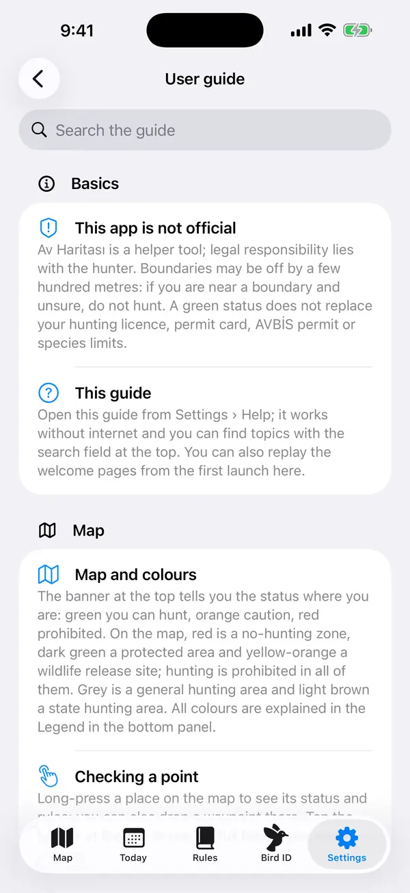
Map5
Map and colours
The banner at the top tells you the status where you are: green you can hunt, orange caution, red prohibited. On the map, red is a no-hunting zone, dark green a protected area and yellow-orange a wildlife release site; hunting is prohibited in all of them. Grey is a general hunting area and light brown a state hunting area. All colours are explained in the Legend in the bottom panel.

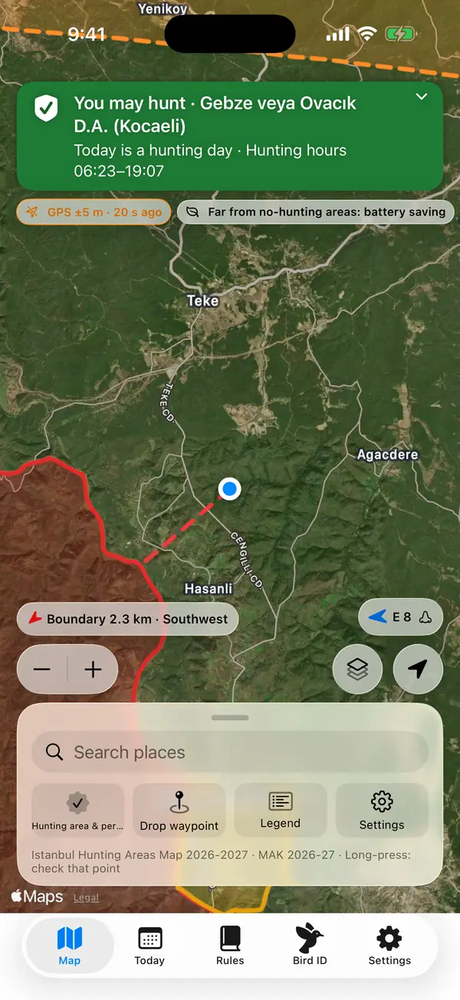
Checking a point
Long-press a place on the map to see its status and rules; you can also drop a waypoint there. Tap the banner at the top to see the full list of rules where you are.

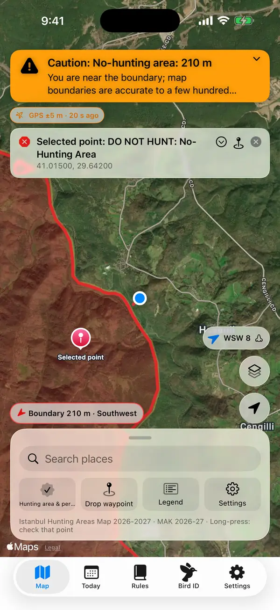
Layers and map type
With the Layers button you can switch the map type (satellite, topo…) and turn hunting zones, the Ministry's scanned official map, the 300 m no-hunting bands and the scent cone on or off. The + / − buttons above the location button zoom the map in or out by a factor of two with each tap; if your location is being followed, following continues (they are hidden when a small screen has no room; pinch-to-zoom always works).
Map without internet
Hunting zones and rules come with the app and work without internet. To see the detailed topographic map where there is no signal, download it in Settings › Offline map while on Wi-Fi (up to 150 MB).
Searching places
Use Search places in the bottom panel to find villages, districts, picnic areas and hunting areas. Without internet, only the names built into the app are searched.
Alerts5
No-hunting zone alerts can't be silenced
When you approach or enter a no-hunting zone you are alerted with sound, vibration and a notification. These alerts come through Focus and Do Not Disturb and also work while the app is locked. While you stay in the zone you are reminded every 2 minutes. The chip on the map shows the distance and direction to the boundary.

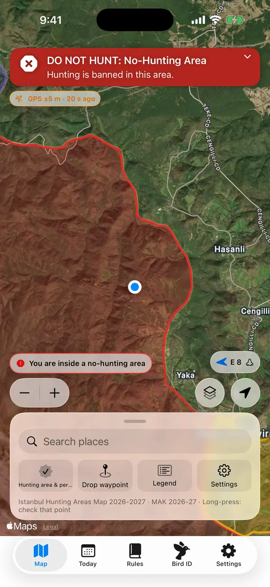
Approach distance and vibration
Choose the approach warning distance (100–1000 m) in Settings › Alerts. The legal 300/500 m rules always apply; this distance is an extra safety margin. Vibration when approaching a boundary is also turned on or off here.

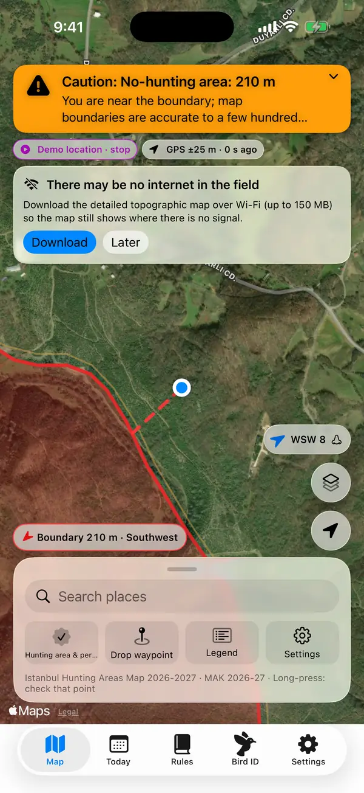
Weak GPS or an old location
If your location is more than a minute and a half old, the app will not say you can hunt; the status is raised to at least orange. Try to get a clear view of the sky; in forests GPS can be off by tens of metres. If Precise Location is off, you are asked to turn it on.

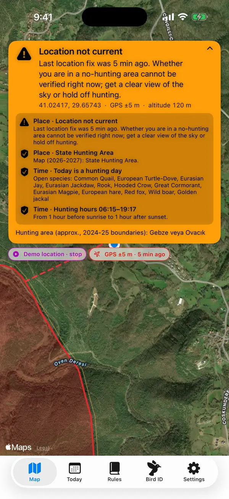
Alerts while the app is closed
With Settings › Tracking › "Alert even when the app is closed" on, you get a notification about 100–200 m before a no-hunting zone, even with the phone in your pocket (requires "Always" location permission). This is a backup and may be a few minutes late. "Continuous background tracking" checks all rules in real time but uses more battery.
Hunting hours reminders
On hunting days you get a notification when hunting hours start at your location, shortly before they end and when they end. Turn this on or off in Settings › Notifications and choose the "Warn before end" time.
Hunting day and weather3
Hunting day, hours and the MAK decision
The Today tab shows whether the selected day is a hunting day, the hunting hours for your location, open species and daily limits. The information comes from the 2026-27 Central Hunting Commission (MAK) decision. With "Also evaluate time rules" on, the hunting day and hours also affect the banner at the top.

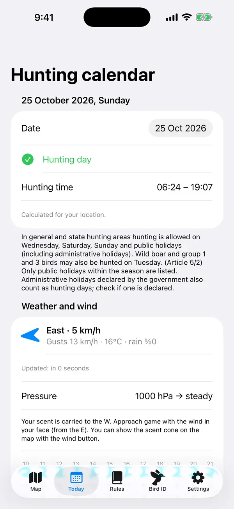
Weather and wind
The Today tab shows wind direction and speed, temperature and precipitation (internet required). The wind button on the map turns on the scent cone: the area your scent drifts to. Approach game with the wind in your face.

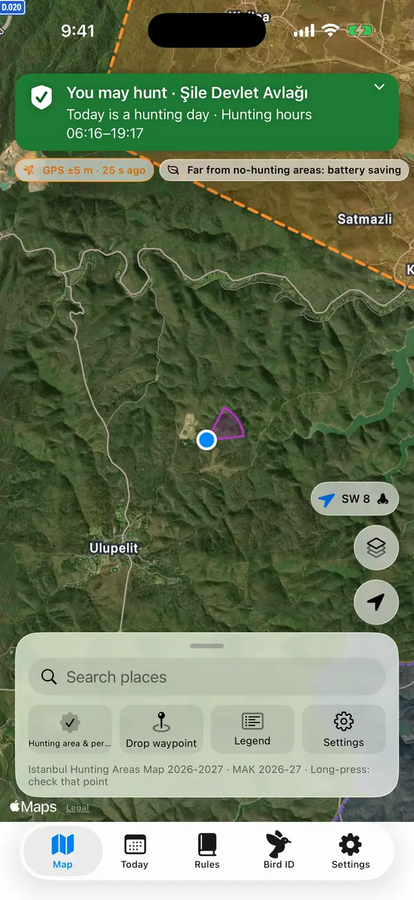
Hunting log
Log your game with + on the Today tab; the remaining daily limit is shown and + is disabled once the limit is reached. Records are kept only on this phone.
Rules and permit3
Rules tab
A summary of the MAK decision for Istanbul: 2026-27 changes, distance bans, which hunting areas are open or closed, protected areas and key prohibitions. The English translation is for information only; the Turkish decision is the legally valid text.

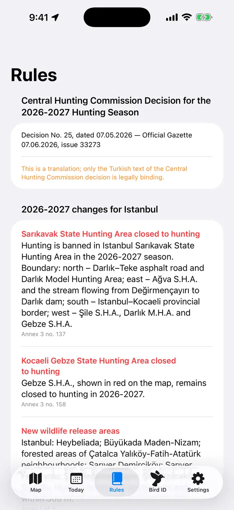
Distance rules
The app checks distances to village/district centres, picnic areas, highways and protected areas itself, and uses OpenStreetMap data for places such as schools, health facilities and military areas. This data may be incomplete: apply the rule yourself for any facility you see in the field.
Hunting area and permit
In Hunting area & permit (bottom panel), add a screenshot or PDF of your AVBİS hunting permit. The document is read on the phone and never sent anywhere; your name and document numbers are not stored. The permitted hunting area is highlighted on the map and you can get directions to its nearest edge.
Bird identification4
Identify birds by sound, photo or video
On the Bird ID tab, let the app listen to a bird for 15 s, choose a photo, or choose or record a video. The result shows the species' MAK status for today. A prediction is a helper, not a definitive identification: do not shoot unless you are sure of the species.

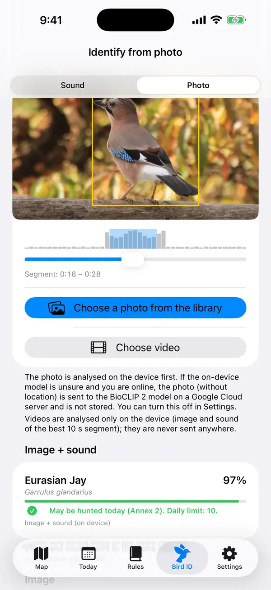
Identifying by sound
Point the phone at the bird and stay quiet. The recording is analysed on the phone with the BirdNET model, no internet needed; predictions are limited to species likely in Istanbul that week. Protected species can sound like game species.

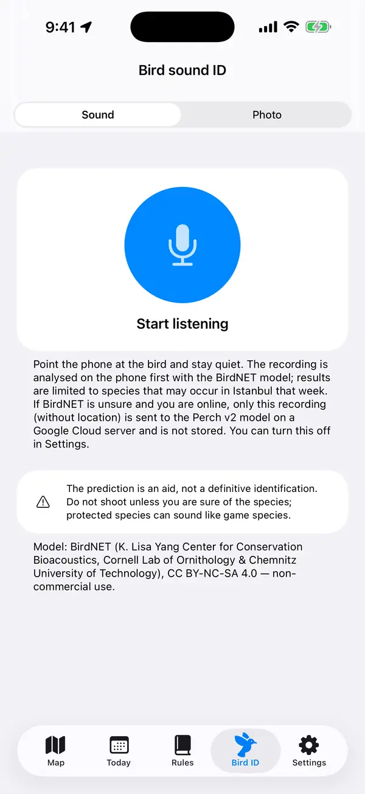
Identifying by photo and video
Keep the bird sharp. The phone finds the birds in the photo by itself and identifies each one from a crop; the yellow frame marks the bird whose result is shown. If the photo has several birds of different species, the most likely species of each is also listed with its number. The most likely species are listed with percentages. For videos, the picture and sound of the best 10 s segment are evaluated together, and you can move the segment yourself. Photos and videos are processed only on the phone (if the online check is on and the on-device model is unsure, the photo may be sent for a check).

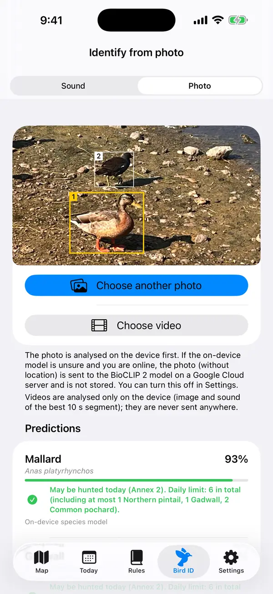
Online check for uncertain results
If the on-device model is unsure and you are online, only the photo or sound recording you chose is sent (without location) to the identification server and is not stored. Videos are never sent. You can turn this off in Settings › Bird identification; when off, identification happens only on the phone.

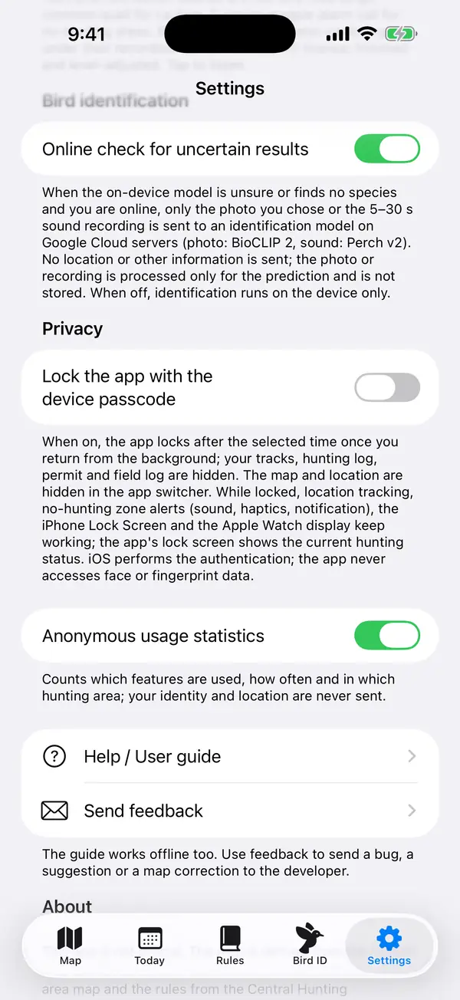
Field tools5
Waypoints and guidance
Drop vehicle, blind, game down, water/spring and note waypoints (Drop waypoint in the bottom panel, or a long press on the map). Tap Guide me to get a compass and the remaining distance. Waypoints can be shared as GPX and are stored only on this phone.

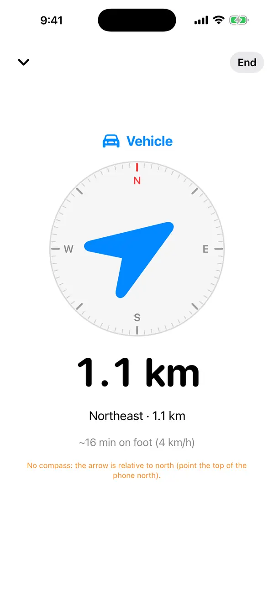
Record track
Use Record track in the bottom panel to record the route you walk, and stop it when you are done. Saved tracks can be shared as GPX or deleted from the list. Location history is kept only if you start a track yourself.
Emergency and sharing your location
The Emergency screen in the bottom panel shows your coordinates in large type, their accuracy and the nearest settlement; you can call 112 with one tap. Use Share location to send your position as a map link.
Field mode and night theme
Field mode enlarges buttons and text for use with gloves and keeps the screen on. The Night (red) theme protects your night vision; on Automatic it starts 30 min before sunset and ends 30 min after sunrise. Both are in Settings › Field mode.

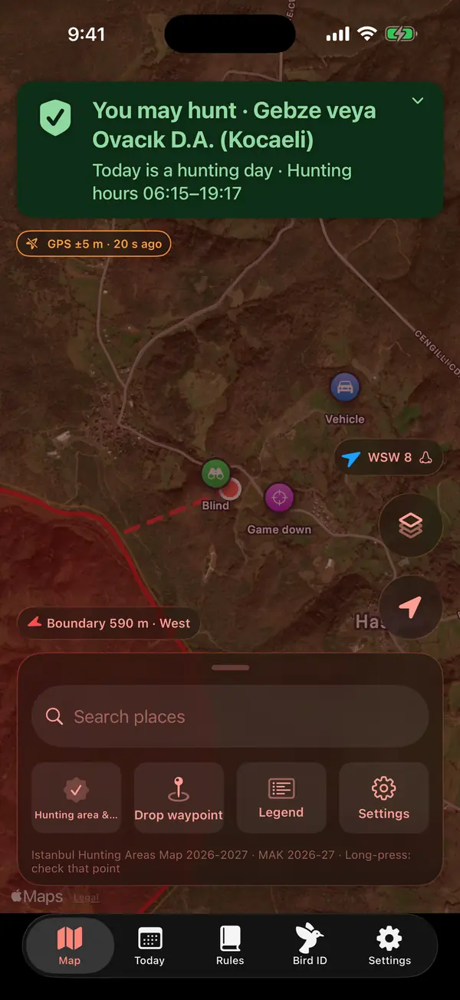
Lock Screen, Apple Watch and Siri
With "Show status on Lock Screen" on, the hunting status and wind appear on the Lock Screen, in the Dynamic Island and on Apple Watch. You can add the Hunting status widget to your Home Screen and ask Siri "Can I hunt here with Av Haritası" or "Av Haritası hunting hours".
Settings4
Battery and tracking
If you stay still in a blind for 3 minutes and are far from no-hunting zones, GPS accuracy is lowered automatically to save battery. "Keep screen on" and the launch/close bird sounds are in Settings › Tracking.

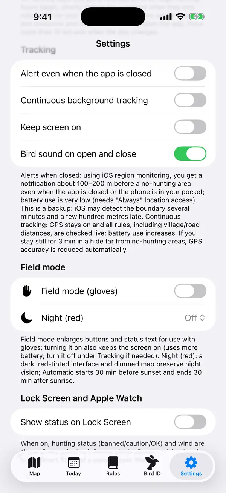
Alert sounds
Alert sounds are real bird recordings: a quail for caution and a magpie alarm for no-hunting zones. Tap them in Settings › Bird sounds to listen.
Sending feedback
With Settings › Help › Send feedback you can write to the developer about a bug, a suggestion, a map/area correction or a bird ID problem. Optionally add a screenshot or photo (with location data removed), for map reports the point you long-pressed on the map or the map centre (rounded to ~11 m), and your email; the form shows exactly what will be sent. Without internet the message waits on the phone and is sent when you're back online. After you've used the app for a while, an App Store rating may be requested at most once every 120 days; never while a warning is active.
Diagnostic reports, field log and demo
In Settings › Advanced you can share crash reports and turn on the field log (off by default, encrypted, deleted automatically after 7 days). Demo mode plays a walk into a no-hunting zone near Sarıkavak so you can try the alerts.
Privacy3
Your location and data
Your location is processed only on the phone; only an approximate location (~1 km) is sent for the weather forecast. Tracks, waypoints, the game log and your permit are stored only on this phone. The privacy policy is in Settings › About.
App lock with Face ID
In Settings › Privacy you can lock the app with Face ID, Touch ID or your device passcode. The lock only hides the screen: location tracking and no-hunting-zone alerts keep working while it is locked.
Anonymous usage statistics
To improve the app, which features are used, how often and in which hunting area is counted anonymously; your identity and exact location are never sent. You can turn this off in Settings; pending records are deleted when you do.

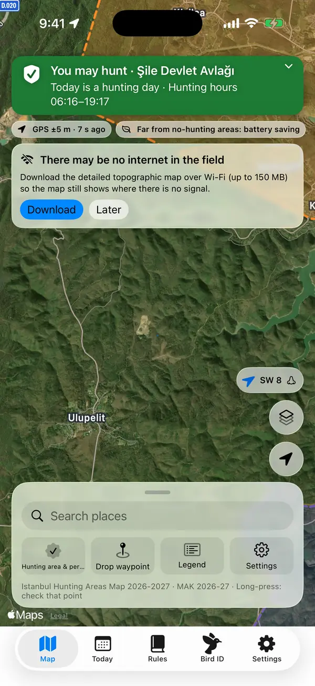